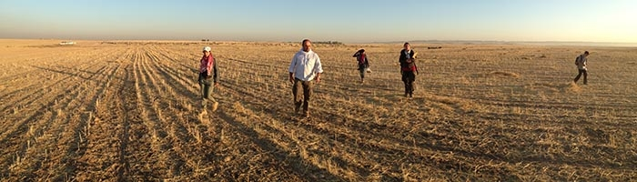
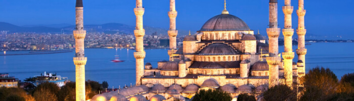

Here's what to visit:
Petra, Jordan

Known as the "Lost City", the "Pink City" and even the "Rose Red City", Petra is a stunningly beautiful ancient city and UNESCO world heritage site nestled into the desert canyons of southern Jordan. The dusty pink rock facade and magical surrounding desert landscapes are famous for being among the Seven Wonders of the world. If you're visiting Jordan, Petra is an absolute must-see, and Pink Jinn is excited to share with you 5 reasons why.
Amadiya, Iraq
The history of the city of Amadiya goes back as far as ancient Assyria and it has probably existed even prior to that due to its strategic place on the flat top of a mountain. It was an Assyrian city known as Amedi from the 25th century BC until the end of the 7th century BC with the fall of the Neo-Assyrian Empire. After that, it was part of Achaemenid Assyria, Seleucid Assyria and Parthian and Sassanid-ruled Assyria until its conquest in the mid 7th century AD by the Arabs. Then, for several centuries, after the expulsion of the caliphs from Baghdad in the 7th century, it was ruled by a pasha from the royal Abbas family, reputed to be one of the richest families in the region. The region in which the city rests is believed to have been the seat of the Magi, or high priests of Median-ruled Assyria, and the city itself is believed to be the home of some of the most significant Magi priests: the Biblical Magi or the "Three Wise Men" who made a pilgrimage to Bethlehem to see Jesus Christ shortly after his birth.
Dubai, UAE
Dubai has emerged as one of the world's leading international business centres and regional hubs. This cosmopolitan city of diversity is at the crossroad of the globe and has transformed itself into a buzzing international metropolis. With easy accessibility, state-of-the-art infrastructure and modern venues, Dubai is the place to be when it comes to business.
Tel Aviv, Israel
Most people who visit Israel head straight to Jerusalem, as it is the main attraction in the country. They can't be blamed, really. It is an incredibly beautiful city that has a lot to offer, and there are so many things to do in Jerusalem that one could easily spend weeks exploring it without ever getting bored. But don't rule out a visit to Tel Aviv. It has many attractions and things to do, this is another city in Israel you will fall in love with.
Istanbul, Turkey
Istanbul has it all. From physical reminders of past empires to the sights and sounds of a modern city as experienced through its trendy, up-and-coming neighbourhoods, the reasons to visit Turkey's largest metropolis are aplenty. Historical sites dot Istanbul - picture palaces adorned with mosaics and frescoes and beautiful mosques piercing the skyline. In the vibrant neighbourhoods, a variety of cafés, bars, boutique shops and rooftop restaurants line the streets, and most areas have colourful bazaars. These are just some of the reasons why this fascinating city should be on every traveller's list.
Doha, Qatar
Once a quiet peninsula lined with sleepy fishing villages, Qatar has remained relatively under the radar for years. After striking oil in 1939, the country has spent the last few decades quietly investing its wealth (the government owns Harrods and Valentino, and has stakes in The Shard, Volkswagen, the Empire State Building and Sainsbury's, to name just a few) and developing ambitious cultural projects like Education City, an academic initiative, and the National Museum of Qatar. In recent years, Doha has exploded into an exciting, cosmopolitan capital, while still embracing its nomadic Bedouin beginnings.